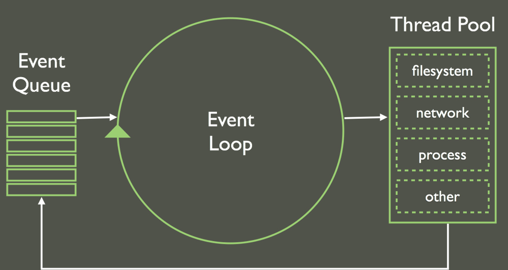

Async & Me
My story with asynchronous programming
Matteo Scandolo
Frontend Leader @LinkMe
Co-Founder @MeanMilan
Why Async Handling is so important in JS?

while(queue.waitForMessage()){
queue.processNextMessage();
}
Disclaimer
This is not about a framework
This is not the truth,
it's my experience
The Past
Callbacks
What is a Callback?
In JavaScript, functions are considered first-class citizens,
they are able to be passed as arguments or stored in variables or fields.
Callbacks are functions that are passed as an argument to another function.
function runThisFunction(myCallbackFunction) {
myCallbackFunction();
}
runThisFunction(function() {
console.log('Kind of useless, but I see your point.');
});
Why I do need a callback?
Allow the calling code to encapsulate some logic
Logic to be performed after an asynchronous operation
A common example
$.ajax({
url: '/api/',
type: 'GET',
success: function(data) {
// Our callback function; this will be executed
// after the async query is finished
}
});
Pretty simple, but what's next?
asyncFn1(function(){
asyncFn2(function(){
asyncFn3(function(){
asyncFn4(function(){
asyncFn5(function(){
...
})
})
})
})
})
Welcome to Callback Hell!
Ok, the term is cool but what are the problems?
Unexpressive
Unmaintanable
Untestable
Can we emprove this?
Named Functions
function asyncFn3(res){
//do async stuff
}
function asyncFn2(res){
//do async stuff
asyncFn3(data);
}
function asyncFn1(input){
//do async stuff
asyncFn2(res);
}
asyncFn1(initialData);
Better but...
Function(s) are referenced with other function(s)
Following the business logic is difficult
Add/remove steps can have side effects
Anyway...
Libraries can help!
.each(arr, iterator, cb)
.series(arr, cb)
.map(arr, iterator, cb)
.all(arr, iterator, cb)
.parallel(tasks, cb)
.reduce(arr, memo, iterator, cb)
Can we do better?
A promise represents the eventual result of an asynchronous operation.
In practice something that have a .then method
A common example:
Resource.query()
.then(
function(res){
// successHandles
},
function(e){
// errorHandler
}
);
From AngularJs Resources
Promise States
pending
fulfilled
rejected
Promise Features
Once fullfilled/rejected state and value does NOT change
.then MUST retutn a Promise
.then are chainables
Promise Methods
.then(success, error)
.catch(error)
[.finally(done)]
.all(promiseArray)
.race(promiseArray)
Promise declaration: ES6
let promise = new Promise(resolve, reject){
// do async stuff
// if success
resolve(value);
// if error
reject(e);
};
// use the promise
promise.then(successHandler, errorHandler);
Promise declaration: Q - $q
var Q = require('q');
var promise = function(){
var deferred = Q.defer();
FS.readFile("foo.txt", "utf-8", function (error, text) {
if (error) {
deferred.reject(new Error(error));
} else {
deferred.resolve(text);
}
});
return deferred.promise;
};
// use the promise
promise.then(successHandler, errorHandler);
Promise declaration: BlueBird
var P = require('bluebird');
var promise = P.promisify(function(done){
// do async stuff
// if error
done(e);
// if success
done(null, value);
});
var promise = P.promisify(
function(itemId, done){
return Model.findById(itemId, done);
}
);
Promise Chains
let pr1 = function(){
return new Promise(resolve, reject){...}
};
// let pr2, pr3, prN, ...
pr1()
.then(function(res){
return pr2;
})
.then(function(res){
return pr3;
})
.then(function(res){
// do something with the result
})
A practical example
// Post and Comments are ngResources, they return a promise
Post.get(postId)
.then((post) => {
$scope.post = post;
return Comments.query({postId: post._id});
})
.then((comments) => {
$scope.post.comments = comments;
})
.catch(function(err){
$scope.error = err.data.message;
})
.finally(() => {
$scope.loader = false;
})
Promise advantages
Function(s) are separated (dillo a parole tue)
Following the business logic is easy
Add/remove steps with no pain!
Handling Errors
pr1()
.then(
function(res){
// do stuff
},
function(err){
// handle error
}
);
If a promise is reject the chain is skipped untill the first error handler
Handling Errors
pr1()
.then(
function(res){
// do stuff (if pr1 is resolved)
return pr2();
},
function(err){
// handle error from pr1
}
)
.then(
function(res){
// do stuff (if pr2 is resolved) else this is never called
},
function(err){
// handle error from pr2
}
);
Practical Advice
Use .catch
pr1()
.then(function(res){
// this is not executed
// if pr1 is rejected
return pr2();
})
.catch(function(err){
//handle error
});
.catch emproves readability
pr1()
.catch(function(err){
//handle error
})
.then(function(res){
// this is executed both if
// pr1 is resolved
// or rejected
return pr2();
})
.catch(function(err){
//handle error
});
Passing multiple values: ES6
function timeout(duration = 0) {
return new Promise((resolve, reject) => {
setTimeout(function(){
return resolve(['a','b','c']);
}, duration);
})
}
var p = timeout(500)
.then((res) => {
let [a, b, c] = res;
console.log(a, b, c);
});
Passing multiple values: Bluebird
var P = require('bluebird');
var pr = P.promisify(function(timeout,done){
setTimeout(function() {
done(null, ['a','b', 'c']);
}, 10);
});
pr(500)
.spread(function(a,b,c){
console.log(a, b, c);
});
Execute a promises in parallel
function timeout(duration = 0) {
return new Promise((resolve, reject) => {
setTimeout(function(){
return resolve(duration);
}, duration);
})
}
Promise.all([timeout(500), timeout(800), timeout(300)])
.then(values => {
console.log(values); // [500, 800, 300]
});
Execute a promises in series
function timeout(duration = 0) {
return new Promise((resolve, reject) => {
setTimeout(function(){
return resolve(duration);
}, duration);
})
}
[timeout(500), timeout(800), timeout(300)].reduce(function(sequence, promise) {
return promise
.then((res) => {
console.log(res);
});
}, Promise.resolve());
Curry
Break a promise chain
Mixing Sync and Async Methods
Don't do that! It hurts!
If the method have 1% possibilities to get Async, start with async!
Suggested Readings:
https://promisesaplus.com
https://developer.mozilla.org/en-US/docs/Web/JavaScript/Reference/Global_Objects/Promise
http://www.html5rocks.com/en/tutorials/es6/promises/
{{$storage.currentSlide}}/{{lastSlide}}